「漢直Win」は、Windows 上で漢字直接入力を行うためのツールです。 徳岡宏樹 さんによって作製され、 現在 T-Code メーリングリストなどにおいて改良が加えられています。
このドキュメントでは、「漢直Win」バージョン 1.27 について解説します。
「漢直Win 1.27」の主な特徴は、次のとおりです。
なお、ここでは漢字直接入力そのものについては触れません。 漢字直接入力については、関連 URL を参照してください。
Windows95 以降の Windows で動作するものと思われます。
「漢直Win」は、まっとうな IME ではなく、 WM_CHAR などのメッセージを送りつけることで文字を入力する という方法をとっています。 したがって、このようなメッセージに対応していないソフトでは、 「漢直Win」を利用することはできません。
たとえば、コマンドプロンプト (MS-DOS プロンプト) では、 入力を行うことができません。
特に、Windows 95/98/Me などの MS-DOS プロンプトでは、 「漢直Win」で入力しようとすると、 コンピュータがしばらく入力を受けつけなくなることがあります。 MS-DOS プロンプトを使用する時は、 必ず「漢直Win」を OFF に してください。 MS-DOS プロンプトでは、 「漢直Win」のトグルキー (Ctrl+\) も使えませんので、 「漢直Win」のウィンドウをクリックして OFF にしてください。
このソフトは無償、無保証です。
「漢直Win」バージョン 1.27 の原型である、 オリジナル版の「漢直Win」バージョン 1.26 (徳岡宏樹 さんの web ページより入手可能の kanwin126.zip) の使用条件は、 同パッケージに含まれるドキュメント kanchoku.txt によると、 以下のようなものです。
kanchoku.txt
●ソフトの使用条件 このソフトは使用も配布も自由ですが、このソフトを使用したことによって 何か問題が発生しても、作者も関係者もなんら責任を負いません。自己責任で 使用してください。
一方、「漢直Win」バージョン 1.27 の部首合成変換のコード (bushu_dic.c) は、 tserv-0.2 の comp.c に基づくものであり、 さらにこの comp.c は、 GNU GPL ライセンスの tc.el を原型としているとあります。
bushu_dic.c
/* このプログラムの原型は, tc.el から作られました. tc.el の Copyright は以下の通りです. ;; ;; T-Code frontend for Nemacs. ;; Author : Yasushi Saito (yasushi@is.s.u-tokyo.ac.jp) ;; Kaoru Maeda (kaoru@is.s.u-tokyo.ac.jp) ;; ;; Department of Information Science ;; Faculty of Science, University of Tokyo ;; 7-3-1 Hongo, Bunkyo-ku, 113 Tokyo, Japan ;; ;; Copyright (C) 1989, 1990, 1991 Yasushi Saito and Kaoru Maeda. ;; ;; This program is free software; you can redistribute it and/or modify ;; it under the terms of the GNU General Public License version 1 ;; as published by the Free Software Foundation. ;; ;; This program is distributed in the hope that it will be useful, ;; but WITHOUT ANY WARRANTY; without even the implied warranty of ;; MERCHANTABILITY or FITNESS FOR A PARTICULAR PURPOSE. See the ;; GNU General Public License for more details. ;; ;; You should have received a copy of the GNU General Public License ;; along with this program; if not, write to the Free Software ;; Foundation, Inc., 675 Mass Ave, Cambridge, MA 02139, USA. */
以上のことから、結果として、「漢直Win」1.27 の利用は、 GNU GPL に 従うべきものと考えられます。
インストールするには、 「漢直Win」のパッケージに含まれている以下のファイルを、 同じフォルダに置いてください。
通常は、アーカイブ (kw127*.zip) を解凍したフォルダを、 適当な場所に設置すればよいでしょう。 必要に応じて、実行ファイルのショートカットを作成しておくと便利です。
アンインストールは、インストールしたファイルを削除するだけです。
補助 DLL (kanchar.dll) が削除できずに、残ってしまう場合は、 Windows を再起動した後にもう一度削除してみてください。
「漢直Win」と同じフォルダに生成される kwrecord.txt, kwstat.txt は、 入力の統計を記録したファイルです。必要がなければ削除してもかまいません。
なお、「漢直Win」は、レジストリを使用しません。
デフォルトでは、Windows XP で、 日本語キーボード (106 配列, 109 配列) で T-Code を 使用する設定になっています。 その他の組み合わせで使用するには、 初期設定ファイル (kanchoku.ini) を変更する必要があります。 「メモ帳」などのエディタで kanchoku.ini を開いて、 以下のような変更を行い、保存してください。
tableFile=t.tbl と書いてある行を、
tableFile=tut.tbl と変更
tableFile=t.tbl と書いてある行を、
tableFile=g.tbl と変更
keyboard=106.tbl と書いてある行を、
keyboard=101.tbl と変更
outputMethod=0 と書いてある行 (のうち、最初のもの) を、
outputMethod=1 と変更
kanchoku.exe のアイコンをダブルクリックで起動します。 起動すると「漢直Win」のウィンドウ (仮想鍵盤と呼びます) が現れ、 タスクトレイにも「漢直Win」のアイコンが表示されます (図左)。
起動直後は、OFF の状態です。 この状態でホットキー Ctrl+\ を押すと ON になります (図右)。 もう一度 Ctrl+\ を押すと OFF に戻ります。 ホットキーのかわりに、 仮想鍵盤やタスクトレイのアイコンを左クリックしてもかまいません。
| 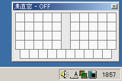 | 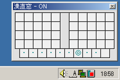 |
ON の時にキーを押すと、仮想鍵盤上に文字が表示されます (図)。 さらにキーを打鍵すると、仮想鍵盤の対応するキー位置に表示されている文字が、 アクティブなウィンドウに入力されます。
| 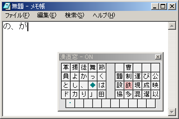 |
仮想鍵盤上の 深緑色の文字 は、特別な機能キーを表しています。 主な機能キーには、次のようなものがあります。
次のような機能キーもあります。
「漢直Win」での T-Code のキー割り当ては、次のとおりです (キーの表記は日本語キーボードの場合、かっこ内は英語キーボードの場合)。
TUT-Code を使うには、あらかじめ設定をしておいてください。
@ キーで、かたかなモードをトグルします。
また、初期設定ファイル kanchoku.ini の
;shiftKana=1
と書いてある行を
shiftKana=1
のように変更しておくと、
シフトキーでかたかなを入力できるようになります。
「漢直Win」での TUT-Code のキー割り当ては、次のとおりです (キーの表記は日本語キーボードの場合、かっこ内は英語キーボードの場合)。
G-Code を使うには、を使うには、あらかじめ設定をしておいてください。
「漢直Win」での G-Code のキー割り当ては、次のとおりです (キーの表記は日本語キーボードの場合、かっこ内は英語キーボードの場合)。
直接入力できない文字 (コードが割り当てられていない文字) は、 「外字」と呼ばれます。 「漢直Win」では、外字を入力するための補助入力手段として、 T-Code でよく使われている、 部首合成変換と交ぜ書き変換の機能を提供しています。 補助入力は、 打ち方の分からない文字を入力するのにも利用することができます。
部首合成変換とは、2 つの文字を組み合わせて 1 文字を入力する方法です。 たとえば、「日 + 生」→「星」のように入力を行います。 「字形組み合わせ入力」とも呼ばれます。
部首合成変換を活用するには、 組み合わせの部品となる漢字を、ある程度覚えておく必要があります。 しかし、文字の意味や読みを考えずに入力することができ、 また、候補選択の必要もないという特徴があります。
「漢直Win」での部首合成変換の手順は、次のとおりです。
| 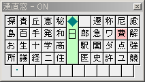 |
bushuAlgo の解説も参照してください。部首合成変換では、部品としてよく使われる文字を覚えておくと便利です。 以下に、部首を代表する文字を挙げておきます (tc2 の info より引用)。
ア、院→こざとへん イ→にんべん ウ→うかんむり エ→工 オ→てへん サ→くさがんむり シ→さんずい ヌ→又 ネ→しめすへん リ→りっとう レ→礼のつくり ロ→口(くち) ワ→わかんむり ン→にすい 部→おおざと 性→りっしんべん 独→けものへん 四→あみがしら 図→くにがまえ 之→しんにょう
部首合成変換の例を、いくつか挙げておきましょう。
文字の足し算
「◆木木」→「林」 「◆木甘」→「柑」 「◆金建」→「鍵」 「◆甘木」→「某」
文字の引き算
「◆終糸」→「冬」 「◆遺之」→「貴」 「◆買四」→「貝」 「◆優イ」→「憂」
文字の一部分の合成
「◆黒然」→「黙」 「◆監見」→「覧」 「◆避土」→「壁」 「◆四掛」→「罫」
意味や読み
「◆しめ」→「〆」 「◆木3」→「森」 「◆郵便」→「〒」 「◆黒四」→「◆」
再帰的な合成
「◆◆上七ル」→「◆虍ル」→「虎」 「◆四◆土土ト」→「◆四◆圭ト」→「◆四卦」→「罫」
個々の文字の具体的な合成のしかたについては、 部首合成変換辞書 kwbushu.rev を参照してください。
付属の部首合成変換辞書 kwbushu.rev は、 tc2 (バージョン 2.3.1) のパッケージに含まれている bushu.rev に、以下の変更を行ったものです。
3３」のような半角/全角の等価定義を追加部首合成変換辞書の書式は、 以下のいずれかの定義を 1 行に 1 つずつ書いたものです。
「CAB」の形の定義 …
「C ::= A + B」(A と B を組み合わせると C になる) の意味。
たとえば、次は、「日 + 音 → 暗」という定義を表します。
暗日音
「CA」の形の定義 …
「A ≡ C」(A は C のかわりになる) の意味。
たとえば、次は、
「院」(部首合成ではこざとへんを表す文字) を使うべきところで、
「ア」をかわりに使ってもよいことを表します。
院ア
部首合成辞書を書き換える場合は、 重複する定義を避け、またソートしておくようにしましょう。 「漢直Win」の現在の仕様では、ソートされていなくてもかまいませんが、 他のドライバと辞書を共用する場合に、問題になることがあります。
交ぜ書き変換とは、一般のかな漢字変換と同様に、 漢字の読みを入力して変換する方法ですが、 読みに漢字を含めることができるのが特徴です。 このことにより、すでに覚えた漢字を活用して候補を絞りこむことができます。
たとえば、「記者」と入力したい場合、 「記しゃ」「き者」などの“読み”で変換することができます。 この場合、「貴社」「汽車」「帰社」などの候補は現れないので、 誤変換を避けることができます。
ただし、「漢直Win」の交ぜ書き変換では、次のような制限があります。
「漢直Win」での交ぜ書き変換の手順は、次のとおりです。
| 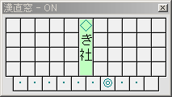 | 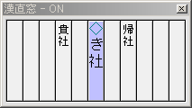 |
活用する語 (形容詞、動詞、形容動詞など) は、
語尾を取り除いて、変化しない部分 (語幹) を読みとして入力します
(「送りがなを除いた部分」ではありません)。
たとえば、「楽しい」は「たのし」で、「走る」は「はし」の読みで
変換してください。
| 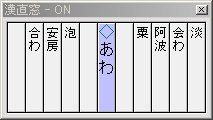 | 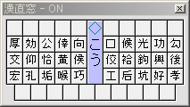 |
強制練習モード[ver1.27g] は、交ぜ書き変換により得られた候補を 熟語ガイド と同様のガイド表示に従って絞り込みながら直接入力してゆく方法です。
「漢直Win」のデフォルトの設定では、強制練習モードは無効になっています。
強制練習モードを使用するには、初期設定ファイル kanchoku.ini の
;maze2gg=1
と書いてある行を
maze2gg=1
のように変更してください。
あるいは、テーブルファイル の特殊定義@g を用いることで、標準モードと
強制練習モードを切り替えることができます。
"か""ん""し""ゃ"[変換] → 入力した4文字が消されて"感官"のガイドが表示される → 見ながら"感"と入力 → "謝"のガイドが表示される → 見ながら"謝"と入力
"感""し""ゃ"[変換] → 2文字が消されて"謝"のガイドが表示される → 見ながら"謝"と入力
"い""っ""ぽ""う"[変換] → 入力した4文字が消されて"一報方"のガイドが表示される → 見ながら"一"と入力 → "報方"のガイドが表示される → 見ながら"方"と入力
"い""ば""ら""き"[変換](T-Codeの場合) → 入力した4文字が消されて外字である"茨"が入力され "木城"のガイドが表示される → 見ながら"城"と入力
次に入力する文字が一意の場合（上の例の"謝"、"一"）、ガイドに加えて打鍵方法が
文字ヘルプ と同様の彩色で示されます。また、前置型変換モードでない場合は
Tab を押すと補完動作となり、選択肢が分かれる直前までの分が入力されます。
（conjugationalMaze=2 では入力を開始するか Enter を押さないと Tab
はひらがな/かたかな変換の動作になります）
変換結果を直接入力する関係上、外字の入力が困難になります。常用する場合は、 熟語ガイド と 外字入力補助 を有効にすることを推奨します。
付属の交ぜ書き変換辞書 kwmaze.dic は、 tc2 (バージョン 2.3.1) のパッケージに含まれている交ぜ書き変換辞書作成キットで作成し、 コード変換 (Shift-JIS, CR/LF) したものです。 T-Code か TUT-Code の 2 ストローク漢字であれば、 読みに含めることができます (補足 … CERTAIN (漢字で入力しなければならない文字集合) として空集合を、 また UNCERTAIN (漢字で入力してもかなで入力してもよい文字集合) として、 T-Code の基本文字の漢字集合 (1159 字) と TUT-Code の 2 ストローク漢字集合 (725 字) の和集合に、 漢字に準じる 3 文字「々〆〇」を加えた計 1183 字を指定して作成したもの)。
なお、交ぜ書き変換辞書は、本来、 ユーザ自身が各自の習熟度に合わせて作成するべきものです。 完全に覚えてしまった漢字を辞書から削除することで、 変換効率を上げることができ、辞書のサイズも小さくすることができるからです。 交ぜ書き変換辞書の作成法については、tc2 の パッケージのドキュメントを参照してください。
交ぜ書き変換辞書の書式は、 次のようなエントリを 1 行に 1 つずつ書いたものです。
<読み> /<候補>/<候補>/…/<候補>/
つまり、
/) で区切って並べたもの (両端にもスラッシュが必要)を、順に並べたものです。 たとえば、次のように書きます。
かん字 /換字/漢字/
活用する語は、
かんじ― /感じ/
のように、活用語尾を、全角ダッシュ (―) で表記します。
読みに空白を含めたり、候補にスラッシュを含めたりすることは (おそらく) できません。
交ぜ書き変換辞書を書き換える場合は、 重複する定義を避け、またソートしておくようにしましょう。 「漢直Win」の現在の仕様では、ソートされていなくてもかまいませんが、 他のドライバと辞書を共用する場合に、問題になることがあります。
部首合成変換 や 交ぜ書き変換 で入力した文字の中に、 直接入力できる文字があった場合、 自動的にその文字の打鍵図が表示されます。
| 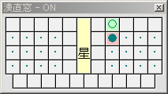 |
打鍵図における、記号と彩色の意味は次のとおりです。 記号は tc2 とほぼ同様の割り当て、 彩色は「漢索窓」と共通です。
交ぜ書き変換で、文字が複数ある場合、 仮想鍵盤上の「≪」のキーを押すと、2 文字目以降の打鍵図を表示します。 「≪」は、T-Code では 44, TUT-Code では - に 割り当てられています。
続けて「≪」を押すと、以前に文字ヘルプの対象になった文字の打鍵図を、 さかのぼって表示します。 また、「≫」と表示されているキーを押すと、逆方向に表示します。 「≫」は、T-Code では 45, TUT-Code では ^ (英語キーボードの場合は =) に割り当てられています。
打鍵図は、入力を続行すると消えますが、 「≪」または「≫」のキーを押すことで、 再度表示することができます。
なお、外字 (直接入力できない文字) や、 交ぜ書き変換の読みに含まれていた文字は無視され、 文字ヘルプの対象にはなりません。
熟語ガイド[ver1.27a] は、 熟語を入力する時に、2 文字目以降の文字の打ち方を 仮想鍵盤上に表示する補助機能です。
「漢直Win」のデフォルトの設定では、熟語ガイドは無効になっています。
熟語ガイドを使用するには、初期設定ファイル kanchoku.ini の
;gg=kwgg.dic
と書いてある行を
gg=kwgg.dic
のように変更してください。
| 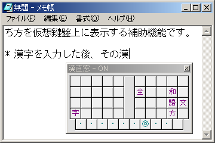 |
「漢直Win 1.27a」のパッケージには、熟語ガイド辞書のサンプルとして、 kwgg.dic を付属しました。 kwgg.dic は、交ぜ書き変換辞書 kwmaze.dic から、 漢字を含むすべての連なりを機械的に拾い出して作成したものです。
特に高頻度の漢字に対しては、候補の重複により、 「２」や「３」のように表示されてしまうことが多いようです。 すでに覚えてしまった漢字や 直接入力するつもりのない漢字を 熟語ガイド辞書から削除することにより、 熟語ガイドの精度を向上できるかも知れません。
熟語ガイドの書式は、次のような形式の行を並べたものとなっているようです。
<文字列> /<文字の並び>
<文字列> の後に続く可能性のある文字を、
<文字の並び> として、半角空白・空角スラッシュの後に
並べて書きます。
例えば、
不可 /解限欠思能避分
というエントリが辞書にあるとき、「不可」と入力した後に 「解限欠思能避分」の各文字のガイドが表示されることになります。
エントリはソートされている必要はありませんが、重複していてはいけません。 なお、熟語ガイド辞書は、いわゆる外字 (ストロークを割り当てられていない文字 のこと) を含んでいてもかまいません。
[ver1.27e] 次のように、一行でマッチ対象パターンを複数指定することもできます。
ぁ ぃ ぅ ぇ ぉ あ い う え お /ぁぃぅぇぉあいうえお
その他の機能を説明します。
TUT-Code で、かたかなを入力するには、 次のような方法があります。
仮想鍵盤上の「ア」のキーを押すと、かたかなモードになります。 このモードで、ひらがなを入力すると、かたかなに変換されて入力されます。 「ア」は、@ (英語キーボードの場合は [) に割り当てられています。
もう一度「ア」のキーを押すと、ひらがなモードに戻ります。
shiftKana=1 と指定すると、
シフトキーを押しながらひらがなを入力することで、
かたかなを入力することができるようになります。
交ぜ書き変換 の読み入力モードで、入力したひらがなを Tab によりかたかなに変換して入力することができます。
なお、この場合、変換したかたかなは ヒストリ入力 の対象になります。
仮想鍵盤上の「全」のキーを押すと、 全角モードになります。 このモードでは、テーブルに定義されている 半角の数字や記号が、全角に変換されて入力されます。 「全」は、T-Code では 33 に割り当てられています。
もう一度「全」のキーを押すと、半角モードに戻ります。
仮想鍵盤上の「句」のキーを押すと、 句読点を「、。」から「，．」に変更できます。 「句」は、T-Code では 32, TUT-Code では [ (英語キーボードの場合は ]) に割り当てられています。
もう一度「句」のキーを押すと、もとの句読点に戻ります。
ヒストリ入力は、最近に入力した文字を再入力するための補助入力です。 部首合成変換で入力した文字や、交ぜ書き変換で入力した熟語を、 一時的にキャッシュしておいて、必要なときに呼び出すことができます。
変換入力した文字のうち、以下のいずれかの条件を満たすものが、 ヒストリに残されます。
仮想鍵盤上の「◎」のキー を打鍵すると、ヒストリ入力モード になり、 最近変換入力した文字が仮想鍵盤に表示されます (図)。 「◎」は、T-Code では : (英語キーボードの場合は ') に割り当てられています。
この状態でキーを押すと、仮想鍵盤上の対応する列の候補が入力されます。 また、Esc, Space, Enter のいずれかのキーを押すと、 もとの通常入力モードに戻ります。
| 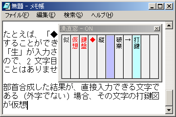 |
すでに説明した 部首合成変換 と 交ぜ書き変換 は、いずれも、 変換する読みや部品を入力する前にモードを指定する、前置型 の変換でした。
これとは逆の 後置型 の変換もあります。 後置型では、まず変換する読みや部品を直接入力します。 そのあとで所定の変換キーを押すと、カーソルの直前の文字が変換されます。
「漢直Win」でも後置型の変換を利用可能ですが、 次のような制限があります。
変換を実行したあと、すでに入力されている読みを消去するために、 BackSpace を対象ソフトに送っています。 したがって、ソフトによってはうまく動かないことがあります。 また、BackSpace を送るタイミングによって、 文字が正常に置き換えられない場合があるようです。
変換後の文字が消去されて変換前の文字が残ってしまう場合、
初期設定ファイル の「outputSleep=n」オプションで、
n の値を大きくすると、
改善できることがあります[ver1.27a]。
なお、前置型の変換の途中で、 ミニバッファの内容に対して後置型の変換を行えます[ver1.27c]。
T-Code 用テーブルファイル t.tbl では、77 に この機能が割り当てられています。 仮想鍵盤では「部」と表示されます。
77 と打鍵すると、カーソル直前の 2 文字が合成され、変換結果で 置き換えられます。 続けて 77 を実行することにより、さらに変換結果を用いた部首合成変換 が行えます。
T-Code 用テーブルファイル t.tbl では、18 〜 98 に この機能が割り当てられています。 それぞれ読みの長さが 1 文字 〜 9 文字の交ぜ書き変換に対応し、 いずれも仮想鍵盤では「変」と表示されます。
部首合成変換と同様に、変換結果を用いてさらに変換を行うことができます。
[ver1.27f] 初期設定ファイル kanchoku.ini で、
enableHankakuKana=1
と指定した場合、 全角モード でかたかなを入力すると、 半角かなに変換されます。
[ver1.27f] 初期設定ファイル kanchoku.ini で、
record=kwrecord.txt stat=kwstat.txt
のように、記録ファイル名を指定すると、入力文字の統計を取ることができます。
kwrecord.txt には、次のような書式で記録されます。
Dec 25 18:26 文字: 56 部首: 0(0%) 交ぜ書き: 0(0%) 機能: 0(0%) Dec 25 18:37 文字: 190 部首: 0(0%) 交ぜ書き: 0(0%) 機能: 0(0%) Dec 25 18:50 文字: 508 部首: 0(0%) 交ぜ書き: 0(0%) 機能: 0(0%) …
各項目の意味は以下のとおりです。
一方、 kwstat.txt には、次のような書式で記録されます。
、 137 0 。 126 0 あ 31 0 い 216 0 う 77 0 … … … 愛 2 0 悪 7 0 圧 2 0 … … …
フィールドは Tab で区切られ、各フィールドの意味は、左から順に、
です。
[ver1.27g] 熟語ガイドを有効にしたうえで、初期設定ファイル kanchoku.ini で、
prefixautoassign=-46>
のように(テーブルファイルの書式の矢印定義形式を参照のこと) キー番号の並びを指定すると、熟語ガイド辞書に含まれている外字を入力 したい状況になった場合に、該当する外字が、指定したキー番号並びで始まる 打鍵に一時的に自動で割り当てられます。
「漢直Win」のカスタマイズに関連するファイルは、 次の 3 種です。
初期設定ファイル (kanchoku.ini) は、 「漢直Win」の動作を設定する設定ファイルです。 通常は、このファイルを編集するだけでよいでしょう。
キーボードファイル (*.key) は、 「漢直Win」で使用するキーを設定する設定ファイルです。 通常は、このファイルを変更する必要はありませんが、 特殊なキーボードを使用したり、キーレイアウトを変更したりしている場合は、 キーボードファイルを編集したり、 新しく作成したりする必要があるかも知れません。
テーブルファイル (*.tbl) は、 T-Code や TUT-Code などの入力方式の、 文字とストロークの対応を定義する設定ファイルです。 部首合成や交ぜ書き変換、かたかなモードなどの機能キーの割り当ても、 このファイルで設定します。 また、独自のコードを作成する場合は、 テーブルファイルを新しく作成することになります。
初期設定ファイル kanchoku.ini は、 「漢直Win」の動作を設定する設定ファイルです。
使用する入力方式 (T-Code, TUT-Code など) や キーボードを指定するには、この設定ファイルを編集します。
;) から行末までは、コメントとして読みとばされます。「漢直Win」の設定オプションは、
[kanchoku] セクションに記述します。
■[kansaku] セクションには、
漢索窓 の設定オプションを記述する場所なので、ここには
「漢直Win」の設定を書かないようにしましょう。□
「漢直Win」の起動に関するオプションです。
hotKey=xx[kanchoku.ini のデフォルト: dc (すなわち、Ctrl+\); 省略時: dc]
xx に、ホットキー (ON/OFF のトグルに使用するキー) を、 16 進表記の 仮想キーコード で指定します。 ここで指定したキーと、Ctrl を同時に押すことで、ON/OFF をトグルします。
たとえば、Ctrl+Space をホットキーにするには、 次のように記述します。
hotKey=20
unmodifiedHotKey=xx[kanchoku.ini のデフォルト: (なし); 省略時: (なし)]
[ver1.27d]
hotKey=xx と同様ですが、
ここで設定したホットキーは単独で働き、Ctrl を押す必要がありません。
たとえば、変換 キーをホットキーにするには、 次のように記述します。
unmodifiedHotKey=1c
hotKey=xx と unmodifiedHotKey=xx の指定は両立します。
たとえば、
hotKey=1c unmodifiedHotKey=1c
と記述すれば、変換 と Ctrl+変換 の両方が ホットキーになります。
ホットキーに設定したキー (Ctrl+\ や 変換 など) は、 つねに「漢直Win」が取ってしまうので、 (「漢直Win」を終了しない限りは) ソフトに渡すことはできなくなります。 キーは慎重に選んでください。
入力方式関連のオプションです。
keyboard=file[kanchoku.ini のデフォルト: 106.key; 省略時: 106.key]
file に、キーボードファイル を指定します。
tableFile=file[kanchoku.ini のデフォルト: t.tbl; 省略時: t.tbl]
file に、テーブルファイル を指定します。
補助入力関連のオプションです。
bushu=file[kanchoku.ini のデフォルト: kwbushu.rev; 省略時: (なし)]
file に、部首合成変換の辞書ファイルを指定します。 指定しない場合は、部首合成変換を使用しない設定になります。
bushuAlgo=[OKA | YAMANOBE][kanchoku.ini のデフォルト: YAMANOBE; 省略時: OKA]
[ver1.27f] 部首合成変換のアルゴリズムを指定します。
bushuAlgo=OKA
… 岡さんによるアルゴリズムを使用します。bushuAlgo=YAMANOBE
… 山辺さんによるアルゴリズム [tcode-ml:2652] を使用します。岡さんのアルゴリズムは、漢直Win の従来のアルゴリズムです。 山辺さんのアルゴリズムは、文字をより細かく分解して合成を行うもので、 たとえば、「準 + シ」は「汁」ではなく「隼」となります。 岡さんのアルゴリズムは、 tc.el や T-Code for Macintosh などに近く、 山辺さんのアルゴリズムは、tc2 (特にバージョン 2.2 以降?) に近いと思われます。
指定しない場合は、岡さんによるアルゴリズムを用います。
mazegaki=file[kanchoku.ini のデフォルト: kwmaze.dic; 省略時: (なし)]
file に、交ぜ書き変換の辞書ファイルを指定します。 指定しない場合は、交ぜ書き変換を使用しない設定になります。
conjugationalMaze=n[kanchoku.ini のデフォルト: 2; 省略時: 1]
活用語を交ぜ書き変換する際の、読みの入力のしかたを指定します。
たとえば、
交ぜ書き変換辞書に はな― /話/ というエントリがあるとして、
「話」と変換しようとしたとき、
conjugationalMaze=0
… 「はな―」(辞書に書いてあるそのままの形) でのみ、変換可能。conjugationalMaze=1
… 「はな―」、「はな」(語幹) でのみ、変換可能conjugationalMaze=2
… 「はなす」「はなさない」「はなします」などの活用形で変換可能[ver1.27f]となります。
gg=file[kanchoku.ini のデフォルト: (なし); 省略時: (なし)]
[ver1.27a] file に 熟語ガイド の辞書ファイルを指定します。 指定しない場合は、熟語ガイドを使用しない設定になります。
defg=string[kanchoku.ini のデフォルト: (なし); 省略時: (なし)]
[ver1.27e] 熟語ガイド 使用時に、デフォルトの状態 (ガイドすべき文字がない場合) で表示する文字を並べて指定します。
prefixautoassign=string[kanchoku.ini のデフォルト: (なし); 省略時: (なし)]
[ver1.27g] 熟語ガイド 使用時に、外字に一時的にストロークを割り振る機能で用いる ストロークを矢印定義形式で指定します。
maze2gg=n[kanchoku.ini のデフォルト: 0; 省略時: 0]
record=filestat=file[kanchoku.ini のデフォルト: kwrecord.txt, kwstat.txt; 省略時: (なし)]
文字入力に関するオプションです。
shiftKana=n[kanchoku.ini のデフォルト: 0; 省略時: 0]
n に 1 を指定すると、シフト打鍵で、
ひらがなをかたかなに変換して入力します。
ただし、
本来シフトを用いて入力する文字 (大文字や記号など) は入力できなくなります。
なお、
シフト打鍵は、かな文字の入力に使うキーだけを「漢直Win」側で取り、
それ以外のキーのシフト打鍵は、
通常の打鍵として扱われます[ver1.27a]。
enableHankakuKana=n[kanchoku.ini のデフォルト: 0; 省略値: 0]
fallbackOnUnshift=n[kanchoku.ini のデフォルト: (省略値); 省略値: enableHankakuKana]
[ver1.27g] n に 1 を指定すると、シフト打鍵の定義がない場合に シフトなし打鍵の定義で代用します。
部分的にシフト打鍵を定義したテーブルファイルを使用する場合や、 lockStrokeByShiftを用いる場合に指定して下さい。
lockStrokeByShift=n[kanchoku.ini のデフォルト: 0; 省略値: 0]
[ver1.27g] 打鍵をシフトと組み合わせることでストロークロック機能が働きます。なお、すべての文字キー （キーボードファイルにあるキー）のシフト打鍵を「漢直Win」側で取ってしまうため、 本来シフトを用いて入力する文字 (大文字や記号など) は F_VERB_FIRST を使う等しないと 入力できなくなります。
送出メッセージに関するオプションです。
outputMethod=nuseWMIMECHAR=n[kanchoku.ini のデフォルト: 0; 省略時: 0]
「漢直Win」がアプリケーションに文字を送出するときに用いる 送出メッセージを指定します。指定できる値は、
です。
WindowsNT/2000/XP では 0 を、 Windows95/98/Me では 1 を指定しておいた方がいいようです。
特定のアプリケーションで「漢直Win」が使えない場合は、 後述の ウィンドウクラスごとに送出メッセージを指定 の方法を 試してみてください[ver1.27f]。
enableWMKANCHOKUCHAR=n[kanchoku.ini のデフォルト: 1; 省略時: 0]
[ver1.27f]
outputMethod=2 を使用する場合は、n に 1 を指定しておきます。
outputSleep=n[kanchoku.ini のデフォルト: 2; 省略時: 0]
[ver1.27a,f,g] キー送出時に Sleep() する待ち時間 (単位はミリ秒) を指定します。 デフォルトは 2 ですが、 次のような場合には、適当に値を増やして指定してみてください。
ただし、useCtrlKey=2 の場合や XKeymacs 等を併用している場合には、
あまり値を増やすと C-h が h に化けるといった別の問題が生じます。
[ver1.27f]
送出メッセージ outputMethod は、
アプリケーションごとに (正確には、ウィンドウクラスごとに)
指定することができます。
指定したいアプリケーションごとに、次のような記述を適宜追加してください。
[<識別子>] className=<ウィンドウクラス名> outputMethod=<送出メッセージ>
<識別子> は、何でもよいのですが、
対象アプリケーションの名前を英字で書くのがよいでしょう。
他のものとぶつからないように適当に命名します。
<ウィンドウクラス名> は、設定を行いたいウィンドウクラス名を指定します。
ウィンドウクラス名は、付属のツール wininfo.exe で調べることができます。
wininfo.exe を起動し (「漢直Win」は終了しておきます)、
調べたいウィンドウをアクティブにして、Ctrl+\ キーを押すと、
入力フォーカスを持つウィンドウのクラス名が取得されるので、
それを書いておきます。
<送出メッセージ> には、0, 1, 2 のいずれかを指定します。
前述の全般的な 送出メッセージ で
outputMethod=0 を指定した場合は、
ここではoutputMethod=1 を、
逆に全般的な指定が 1 だったときは、ここでは 0 を指定してみてください。
それでだめなら、outputMethod=2 も試してみてください。
outputMethod=2 でも入力できない場合も、
「詳細なテキストサービスをオフにする」にチェックを入れると、
入力できるようになることがあります
(コントロールパネルの
「地域と言語のオプション」→「言語」タブ→「詳細」→「詳細設定」タブ)。
また、IME との相性もあるようです。
付属の kanchoku.ini に、いくつか設定例がありますので、参考にしてみてください。
表示に関するオプションです。
xLoc=nyLoc=n[kanchoku.ini のデフォルト: -1, -1; 省略時: -1, -1]
起動時の「漢直Win」のウィンドウの初期位置の x 座標と y 座標を、 それぞれピクセル単位で指定します。 -1 とすると、特に指定しない設定になります。
offHide=n[kanchoku.ini のデフォルト: 0; 省略時: 0]
n に 1 を指定すると、OFF 時に「漢直Win」のウィンドウを非表示にします。
また 2 を指定すると、ON 時にもウィンドウを非表示にします。 この場合は、補助変換・候補選択・文字ヘルプ・ヒストリ入力時のみ、 ウィンドウを表示します。
followCaret=n[kanchoku.ini のデフォルト: 0; 省略時: 0]
n に 1 を指定すると、 「漢直Win」のウィンドウがキャレット (カーソル) に 追従して動くようになります。 ただし、対象ソフトによっては動作しないことがあります。
以下は、パッチ作成者の好みで加えられたオプションです。 通常は指定する必要はないでしょう。
hardBS=n[kanchoku.ini のデフォルト: 0; 省略時: 0]
第 2 打鍵として押された BackSpace キーは、通常、 第 1 打鍵の取り消しですが、 n に 1 を指定すると、「第 1 打鍵の取り消し + 文字削除」になります。
weakBS=n[kanchoku.ini のデフォルト: 0; 省略時: 0]
[ver1.27g] TUT-Code 等の 3 打鍵以上を用いる入力方式において、 第 3 打鍵等として押された BackSpace キーは、通常、 第 1 打鍵以降の取り消しですが、 n に 1 を指定すると、「直前の打鍵のみの取り消し」になります。
useCtrlKey=n[kanchoku.ini のデフォルト: 0; 省略時: 0]
n に 1 を指定すると、 「Ctrl+ 英字」を機能キーと同様に扱います。具体的には、
それぞれ、同様に扱います。
[ver1.27g] n に 1 を指定した場合は、例として C-h が入力された場合、 BackSpace と同じ動作をした後アプリに C-h を送出しますが、 n に 2 を指定すると代わりに BackSpace を送出するようになります。
win95=n[kanchoku.ini のデフォルト: 0; 省略時: 0]
Windows95 で仮想鍵盤のフォントが 1 ドットずれるようなので、その補正です。
offResetModes=nnn...[kanchoku.ini のデフォルト: 0; 省略時: 0]
[ver1.27g] nnn... に 1 を指定すると、漢直WinをOFFにしたときに、「かたかなモード」と 「全角モード」と「句読点」と「強制練習モード」と「ストロークロック」を 初期状態にリセットします。
nnn... の各桁は左から順に上記のモードに対応しています。 110 と指定した場合は 11000 の省略形とみなされ、「かたかなモード」と「全角モード」 がリセットされます。上記の 1 という指定は 11111 の省略形です。
style_base=00rrggbb...style_info=00rrggbb...style_fontname=stringstyle_fontsize=nstyle_padding=n[ver1.27g] 仮想鍵盤の配色・フォントの設定です。付属のツール kwstyle.exe を用いると、 実行中の漢直Winでも動的に設定を変更することができます。
漢直Winと同じディレクトリに置いた kwstyle.exe を起動し、設定を変更して OK または Apply をクリックすると、kanchoku.ini が書き換えられ、 漢直Winが実行中の場合にはその設定が反映されます。
キーボードファイル *.key は、キーボード上の実際のキーと、 「漢直Win」の内部で使用する キー番号 の対応を記述したファイルです。
使用するキーボードに合わせたものを選び、初期設定ファイル kanchoku.ini の
keyboard オプションで指定します。
「漢直Win」のパッケージに含まれているキーボードファイルは、次のとおりです。
通常は、上記のいずれかから選ぶとよいでしょう。
特殊なキーボードを使用している方や、キーレイアウトを変更している方は、 以下の キーボードファイルの書式 を参考に、 キーボードファイルを記述してお使いください。
キーボードファイルには、
「漢直Win」で用いる 49 個のキーの 仮想キーコード を、16 進表記で、
キー番号 (0 〜 48) の順に記述します。
各仮想キーコードの後ろには、コンマ (,) を書きます。
仮想キーコードやコンマの間には、空白や改行を入れてもよいようです。
コメントを書くことはできません。
キー番号は、「漢直Win」の内部で、各キーを識別するのに用いられる番号です。 T-Code で用いられる 40 個のキーについては、 キーボードの左上から順に 0 〜 39 を、 またそれ以外のキーにも 40 〜 48 の番号を割り当てています。
各キー番号のキーの配置を、 実際のキーボード上の配置 (図左)、および 「漢直Win」の仮想鍵盤上の配置 (図右) に示します。 なお、英語キーボードでは、48 番に相当するキーは存在せず、 利用できないようです。
| 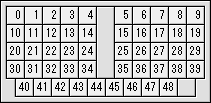 | 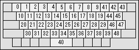 |
仮想キーコードは、Windows の内部で、各キーを識別するのに用いられる数値です。
主なキーの仮想キーコードを、下の表に示します。
■カナ、漢字、Win など、一部のキーは 「漢直Win」では利用できないようです。□
|
|
|
|
|
|
31, 32, 33, 34, 35, 36, 37, 38, 39, 30, 51, 57, 45, 52, 54, 59, 55, 49, 4f, 50, 41, 53, 44, 46, 47, 48, 4a, 4b, 4c, bb, 5a, 58, 43, 56, 42, 4e, 4d, bc, be, bf, 20, bd, de, dc, c0, db, ba, dd, e2,
|
|
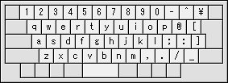 |
31, 32, 33, 34, 35, 36, 37, 38, 39, 30, 51, 57, 45, 52, 54, 59, 55, 49, 4f, 50, 41, 53, 44, 46, 47, 48, 4a, 4b, 4c, ba, 5a, 58, 43, 56, 42, 4e, 4d, bc, be, bf, 20, bd, bb, dc, db, dd, de, c0, 00,
| 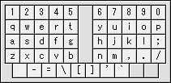 | 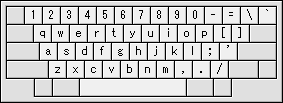 |
31, 32, 33, 34, 35, 36, 37, 38, 39, 30, de, bc, be, 50, 59, 46, 47, 43, 52, 4c, 41, 4f, 45, 55, 49, 44, 48, 54, 4e, 53, ba, 51, 4a, 4b, 58, 42, 4d, 57, 56, 5a, 20, db, dd, dc, bf, bb, bd, c0, e2,
| 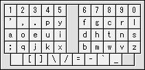 | 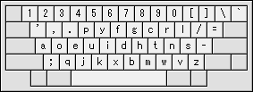 |
テーブルファイルは、入力方式 (T-Code や TUT-Code など) の定義 を記述したファイルです。
使用する入力方式に合わせたものを選び、初期設定ファイル kanchoku.ini の
tableFile オプションで指定します。
「漢直Win」のパッケージに含まれているテーブルファイルは、次のとおりです。
テーブルファイルをカスタマイズしたい方や、独自の入力方式をお使いの方は、 以下の テーブルファイルの書式 を参考に、 テーブルファイルを記述してお使いください。
以下に、テーブルファイルの書式 (推測) を説明します。
テーブルファイルは、大まかに以下のような形をしています。
{
<0> , <1> , <2> , <3> , <4> , <5> , <6> , <7> , <8> , <9> ,
<10> , <11> , <12> , <13> , <14> , <15> , <16> , <17> , <18> , <19> ,
<20> , <21> , <22> , <23> , <24> , <25> , <26> , <27> , <28> , <29> ,
<30> , <31> , <32> , <33> , <34> , <35> , <36> , <37> , <38> , <39> ,
<40> , <41> , <42> , <43> , <44> , <45> , <46> , <47> , <48>
}
すなわち、<0> 〜 <48> の 49 個の「なんらかの要素」を、
コンマ (,) で区切って並べ、
その全体を中かっこ ({ と }) で囲ったものです。
これを、以後、ブロックと呼びます。
; または # から行末までは、コメントとして読みとばされます。ブロックの中の各要素 <n> が、
それぞれの キー番号 のキーに対応しており、
この部分に、各キーの挙動を記述します。
[ver1.27g]
シフト打鍵を用いる入力方式の場合、各要素は
実際には (〜,<n> / <Sn>,〜) という形式で
2個の要素を指定するようになっており、<n> で通常打鍵時の、<Sn> で
シフト打鍵時の挙動を記述します。/ 以降を省略することができ、省略した
形式のものが従来のテーブルファイルと同じになります。
なお、シフト打鍵を使わないキーのシフト打鍵は漢直Winの制御下にないため、
従来のテーブルファイルを用いれば自動的に従来と同じ動作になります。
各キーの挙動として指定する要素は、次のいずれかです。
何も書かなかった場合は、空定義となります。
この場合、該当キーを押しても何も起こらず、何も入力されません (厳密には、内部状態がリセットされ、第 1 打鍵待ちの状態になります)。 文字が定義されていないキーには、空定義を指定します。
なお、空定義を指定する場合でも、区切りのコンマは省略できません。
[ver1.27g]モードブロックを複数回繰り返す場合、 そのブロックで定義または上書きしたい部分以外は空定義にしてください。
49 個の要素をコンマ (,) で区切って並べ、
全体を中かっこ ({ と }) で囲ったものです。
次の打鍵に続くようなキーにはブロックを指定し、 そのブロックの内側の各要素に、次の各打鍵の挙動を記述します。
"の" あるいは "漢" などのように、
ダブルクォート (") で囲った
文字 (の有限個の並び) です。
この場合、該当するキーを打鍵すると、指定した文字が入力されます。
なお、文字列定義中の「\」は、続く 1 文字をエスケープします。
文字「"」を定義するには「"\""」、
「\」を定義するには「"\\"」と指定してください。
現在の仕様では、
「\」は単なるエスケープであり、「\n」や「\t」は
改行やタブにはなりません。
部首合成変換や交ぜ書き変換など、
各種の機能に対応する定義です。
@b や @m などのように、@<文字> という形式をしています。
後述の 特殊定義の一覧 を参照してください。
[ver1.27g] "-26>" や "-S12>" などのように、マイナス (-) と
不等号 (>) でキー番号を囲ったものです。矢印定義の後ろに、キー番号で
指定した打鍵の挙動を指定します。モードブロックとしても利用可能です。
シフト打鍵は "S12" のように "S" をつけて指定します。
たとえば T-Code の場合では、
モードブロックの 0 〜 39 番の要素 (第 1 打鍵に対応) にブロックを指定し、
その各ブロックの中の 0 〜 39 番の要素 (第 2 打鍵に対応) に文字列を
指定することになります。
特に、
モードブロックの中の 26 番のブロックの中の 23 番の要素には
部首合成変換 @b を、
また 23 番のブロックの中の 26 番の要素には
交ぜ書き変換 @m を指定することに
なります。
TUT-Code も T-Code の場合と同様ですが、 3 ストロークや 4 ストロークの文字に対しては、 モードブロック内の該当する要素に、2 重あるいは 3 重の入れ子のブロックを 指定することになるでしょう。
[ver1.27g] 矢印定義を用いれば、ブロックが入れ子になること等を避けることができ、 読みやすく改造しやすいテーブルファイルを記述することが可能になります。
たとえば先ほどの T-Code の例は、矢印定義を用いれば、独立したモードブロックとして
-23>-26>@m -26>-23>@b
の2行で記述できます。
特殊定義に指定できるものを、以下に列挙します。 [ ] 内は仮想鍵盤での表示を、 ( ) 内は「漢直Win」の内部での名前を表しています。
@Z [全] (F_HANZEN)enableHankakuKana=1 オプションを指定すると、
半角かなにも対応します。[ver1.27f]
@K [ア] (F_HIRAKATA)@s [替] (F_SWITCH_MODE)@K と同じ意味になります。
@p [句] (F_PUNCT)@g [習] (F_MAZE2GG)@w [窓] (F_SHOWWIN)offHide=1 と offHide=2 の間でトグルします。
@b [◆] (F_BUSHU_PRE)@m [◇] (F_MAZE_PRE)@! [◎] (F_HIST)@q [×] (F_QUIT)@B [部] (F_BUSHU_POST)@1 〜 @9 [変] (F_MAZE_POST1 〜 F_MAZE_POST9)@D [゛] (F_DAKUTEN)@P [゜] (F_HANDAKUTEN)@h [≪] (F_HELP_BACKW)@H [≫] (F_HELP_FORW)@h の逆方向に表示します。
@v [・] (F_VERB_FIRST)@^ [・] (F_VERB_THIS)[ver1.27e]
「#define ...」の形式の行指定で、
入力方式に固有の設定を行うことができます。
現在、以下のオプションが設定可能です。
#define table-name "name""T", "TUT", "G"などのように指定します。
指定した名前は、「漢直Win」のタイトルバーに表示されます。
#define prefix specTry-Code や TT-Code などの、プレフィックス拡張型の入力方式における、 文字ヘルプの表示指定です。
Try-Code の場合
#define prefix /■/40/■□/回/
TT-Code の場合
#define prefix /▲/26,23/▲○/▲/:/▽/23,26/▽○/▽/
「拡張表を代表する文字 (漢索窓で利用される)」 「拡張プレフィックスのキー番号 (コンマ区切り)」 「base stroke (拡張プレフィックスを除いた部分の各打鍵) を表す文字 (初打から順に並べる)」 「base stroke での二重打鍵と (もしあれば) 三重打鍵を表す文字 (並べる)」 を、スラッシュで区切って指定します。 指定が複数ある場合は、コロンで区切って並べます。
[ver1.27g]シフト打鍵は "S12" のように "S" をつけて指定します。
#define defguide "string"初期設定ファイル の defg=string と同様です。
たとえば、phoenix 配列の配字案内は次のように指定します。
#define defguide "亜域液牡凱梶丸偽漁吟芸元鯉剛坐雑事蛇什傷上笥税糎促濁中鍔努峠寧函備侮別頬脈唯乱令"
defg=string と同時に指定された場合は、
defg=string の設定が優先されます。
offResetModes=nnn... オプション
(木原さん [offResetModes])offHide=2 の状態から一時的にウィンドウを表示する機能: @w 特殊定義
(木原さん [tmpshowwin])weakBS=1 オプション@w 特殊定義useCtrlKey=1 の場合や XKeymacs との同時使用時の問題を修正:useCtrlKey=2 オプション
([漢直スレ4:253])outputVKeyMethod=1 オプションoutputUnicode=1 オプション@v や Tab を使って"h"を入力したときに内部バッファが
間違って一文字削除されてしまう問題を修正:bushuAlgo=YAMANOBE オプション
(山辺さん [tcode-ml:2652,2662])conjugationalMaze=2 オプション
(山辺さん [tcode-ml:2644--2645])useWMIMECHAR → outputMethodenableHankakuKana=1 オプションrecord=file, stat=file オプションdefg="..."」オプション新設。offHide=1」オプションを指定。#define {table-name,prefix,defguide} arg」unmodifiedHotKey=xx」オプション新設)offHide=2」オプション:
モード ON 時も仮想鍵盤を非表示
(※暫定機能、news.txt やマニュアルには未記載)。
(「連習スレ2」[614,619])als @B」の定義の脱落の修正
(木原英人さん [tcode-ml:2450])outputSleep=n」
(「連習スレ2」[99?])shiftKana=1」時のシフト打鍵の扱いの改善
(木原英人さん [tcode-ml:2438])「漢直Win」バージョン 1.27 では、設定ファイルの書式が変更されています。
「漢直Win」バージョン 1.26eb (kw126eb-20020505.zip) やそれ以前の版 (以下、「1.26 版」と総称) で、 設定ファイル等をカスタマイズして使用されていた方は、 以下の記述を参考に、再カスタマイズしてください。
設定ファイルの変更点
[kanchoku] の記述が必要です。
また、コメントは # ではなく、 ; で記述してください。【オプション】
USEWMCHAR】
1.26 版では、WM_IME_CHAR のかわりに WM_CHAR を指定するオプションでしたが、
このオプションは廃止されました。
送出メッセージは、デフォルトで WM_CHAR が用いられます。
WM_IME_CHAR を使用する場合には、
useWMIMECHAR=1 または outputMethod=1 と指定してください。SHOWHELP】
1.26 版では、文字ヘルプを表示するオプションでしたが、
このオプションは廃止されました。
文字ヘルプは常に表示され、非表示にすることはできなくなりました。FORCEBS】
hardBS にリネームされました。詳しくは 初期設定ファイル を参照してください。
テーブルファイルの変更点
@Z (F_HANZEN)@K (F_HIRAKATA)@p (F_PUNCT)@! (F_HIST)@q (F_QUIT)@D (F_DAKUTEN)@P (F_HANDAKUTEN)@b: F_BUSHU_PRE ← F_BUSHU@m: F_MAZE_PRE ← F_MAZEGAKI_START@B: F_BUSHU_POST ← F_KOUCHIBUSHU@1 〜 @9: F_MAZE_POSTn ← F_KOUCHIn@h: F_HELP_BACKW ← F_HELP@H: F_HELP_FORW ← F_HELP_NEXT@v: F_VERB_FIRST ← F_VERTATIM@s:
1.26 版ではモードブロックの切り替えでしたが、
1.27 版ではかたかなモードの切り替え @K と同等になります。@h, @H:
1.26 版では、@h が「最初の文字」のヘルプ、
@H が「次の文字」のヘルプでした。
1.27 版では、@h を続けて実行することで
「次の文字」のヘルプを表示し、
また @H で @h と逆方向に表示します。@v
1.26 版では、常に、対応するキーの入力でした。
バージョン 1.27 では、第 2 打鍵以降で指定された場合は、
第 1 打鍵のキーの入力になります。| 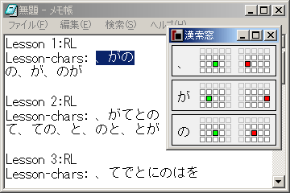 |
「漢索窓」は、「漢索板」(オリジナル版の漢直Win の姉妹ソフト) のクローンソフトです。 「漢索板」と同様に、文字の打ち方 (コード) を検索するツールです。
■「漢索板」は、 徳岡宏樹さんが作製されたソフトです。 徳岡さんのページ から入手することができます。□
kansaku.exe を起動すると、「漢索窓」のウィンドウが現れます。 「漢索板」と同様に、調べたい文字をクリップボードにコピーし、 「漢索窓」のウィンドウ内をダブルクリックすると、 対象文字の打鍵図が表示されます。
直接入力できない文字、すなわちストロークが割りあてられていない文字は、 無視します。 起動直後や、クリップボード内に入力できる文字がない場合は、 空白の打鍵図が表示されます。
現在のところ、以下のような制限 (仕様ともいう :-) があります。
「漢直Win」と共通の設定ファイル kanchoku.ini の [kansaku] セクションにて
設定を行います。
設定できるオプションは、以下のとおりです。
tableFile=file[kanchoku] セクションの
tableFile=file の指定を読みこみます。
certain=filefile に CERTAIN ファイル を指定します。 CERTAIN ファイルに書かれた文字は、打鍵図を表示しません。
かなや句読点、すでに覚えてしまった漢字を書いておくと、 文字をまとめて検索する時に便利でしょう。
CERTAIN ファイルには、1 行に複数の文字を書くことができますが、 1 行が長くなりすぎないようにしてください。
dotStyle=ndotStyle=0 と等価) では、
オリジナルの「漢索板」や、「漢直Win」の仮想鍵盤に似た打鍵図を表示しますが、
dotStyle=1 と指定すると、
tc2
のヘルプや橋田表に似た打鍵図を表示します。
nonUniq=nnonUniq=1 と指定すると、同一文字の複数回の入力をスキップしません。
skipOutset=nskipOutset=1 と指定すると、外字をスキップします。
Tコード入力環境tc2 … 北嶋暁さんの tc2 のページ。 tc2 は Emacs 用の直接入力環境で、 T-Code と TUT-Code を使うことができます。
「漢直Win 1.27」の部首合成変換辞書・交ぜ書き変換辞書は、 tc2 のパッケージに含まれるファイルから作成されています。
オリジナル版漢直Win の作者である 徳岡宏樹 さん、
かたかなの シフト打鍵による入力 に関するパッチをはじめ、 数々の助言を与えてくださった 木原英人 さん、
1.26eb 版をパッケージング してくださった 北嶋暁 さん、
キャレット追従機能 のコードを書いてくださった 「【原理】T-Code連習マラソン【主義】」の 816 さん、
熟語ガイド 機能のコードをはじめ、 多くのコードを書いてくださった 山辺 さん、
1.27d 版のコードやドキュメントを書いてくださった 岡俊行さん、
バグレポートや様々なアドバイスを与えてくださった、 T-Code メーリングリストや「連習スレ」のみなさま、
そして、「漢直Win」を使ってくださっているみなさま、
に、心から感謝いたします。